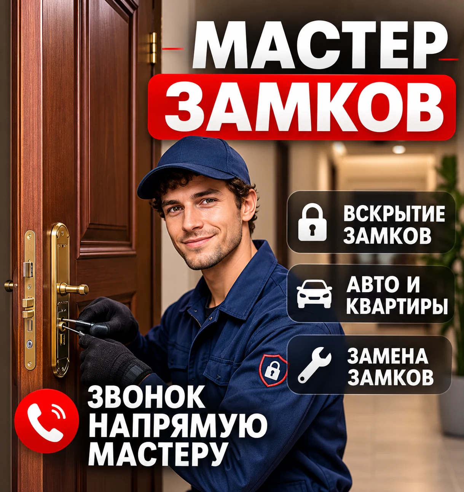

Вскрытие дверей
Помощь с замками входных дверей квартир, домов и других помещений.
Обсудить задачу
Вскрытие, замена и ремонт замков в Павлодаре. Объясните ситуацию — обсудим решение и стоимость до начала работы.
+7 705 611 800601 / УСЛУГИ
Потеряли ключи, заклинил механизм или нужна замена? Расскажите, что произошло.
Помощь с замками входных дверей квартир, домов и других помещений.
Обсудить задачуЕсли ключ остался внутри или не получается открыть автомобиль.
Обсудить задачуЗамена замка или личинки, помощь с заедающим и неисправным механизмом.
Обсудить задачу02 / ПОДХОД К РАБОТЕ
Сначала разбираемся в ситуации, затем выбираем способ решения.
Позвоните или напишите мастеру, чтобы обсудить вашу задачу.
Цена зависит от замка и сложности работы. Уточните условия до начала работ.
Способ вскрытия подбирается с учетом механизма и его состояния.
03 / ЭТАПЫ РАБОТЫ
Позвоните или отправьте в WhatsApp фото замка и описание проблемы.
Сообщите адрес. Согласуйте время приезда и предварительную стоимость.
Подготовьте документы, подтверждающие право доступа к объекту.
После работы проверьте вместе с мастером, как открывается и закрывается замок.
04 / ВОПРОСЫ И ОТВЕТЫ
Стоимость зависит от типа замка, его состояния и сложности доступа. Опишите проблему или отправьте фото в WhatsApp: мастер уточнит детали. Окончательные условия согласовываются до начала работы.
Время зависит от адреса и текущей занятости. Позвоните, чтобы узнать ближайшее доступное время выезда в ваш район Павлодара.
Это зависит от конструкции и состояния замка. После осмотра мастер объяснит доступные варианты и возможные последствия до начала работы.
Для вскрытия необходимо подтвердить право доступа к помещению или автомобилю. Сообщите заранее, если документы остались внутри, — порядок действий нужно обсудить с мастером.
Напишите адрес, опишите ситуацию и приложите фото двери и замка. Для автомобиля укажите марку и модель. Не публикуйте фото ключей и личных документов в открытом доступе.
05 / КОНТАКТЫ
Павлодар, Казахстан
Позвоните напрямую мастеру или напишите в WhatsApp.